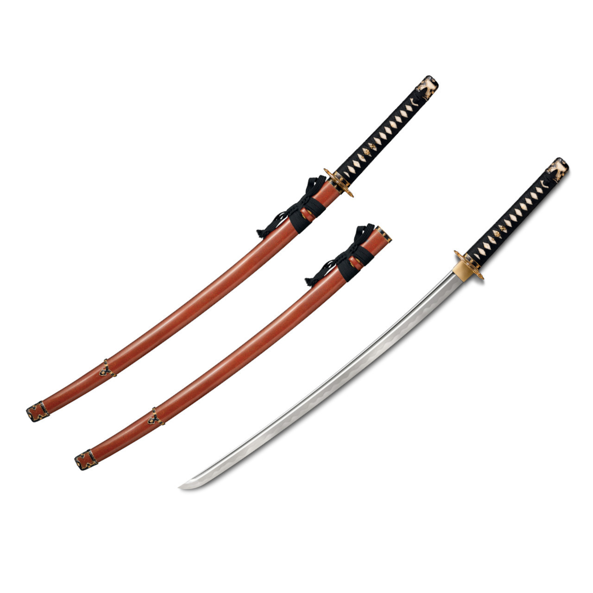
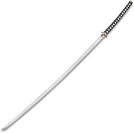
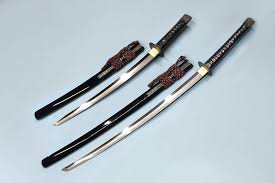

Катана стала королевой полей сражений в период Сэнгоку (Эпоха воюющих провинций). Она идеально подходила для ближнего боя в условиях тесноты, когда самураи сражались пешими. Позже, в мирную эпоху Эдо, она стала символом души воина и использовалась в уличных дуэлях.

Катана (Katana)
Длина: 60-75 см | Стиль: Пеший бой
Классический меч с умеренным изгибом. Носится лезвием вверх за поясом для мгновенного удара.
Исторический контекст:

Тачи (Tachi)
Длина: 70-80 см | Стиль: Конный бой
Древний меч с сильным изгибом. Носится на подвесе лезвием вниз.
Исторический контекст:
Тачи доминировал в эпоху Хэйан и Камакура (война Гэмпэй). Это оружие всадника: изгиб и длина позволяли эффективно рубить пехоту противника с седла. Часто богато украшался и использовался в придворных церемониях императора.

Одачи (Odachi)
Длина: 90-180 см | Стиль: Прорыв строя / Анти-кавалерия
Гигантский полевой меч. Из-за размера его носили за спиной или доверяли оруженосцу.
Исторический контекст:
Использовался штурмовыми отрядами для прорубания коридоров в строю пикинеров, а также для подрезания ног лошадям кавалерии. Часто такие мечи ковали не для боя, а как подношение храмам, чтобы продемонстрировать невероятное мастерство кузнеца.

Дайшо (Daisho)
Состав: Катана + Вакидзаси
Пара мечей: длинный и короткий. Главный знак принадлежности к классу самураев.
Исторический контекст:
Набор утвердился в эпоху Эдо. "Дайшо" буквально означает "Большой-малый". Если катану приходилось сдавать при входе в чужой дом, то короткий меч (вакидзаси) самурай не снимал никогда, даже во сне. Это оружие "последнего шанса" и защиты чести (сэппуку).